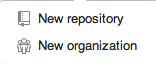
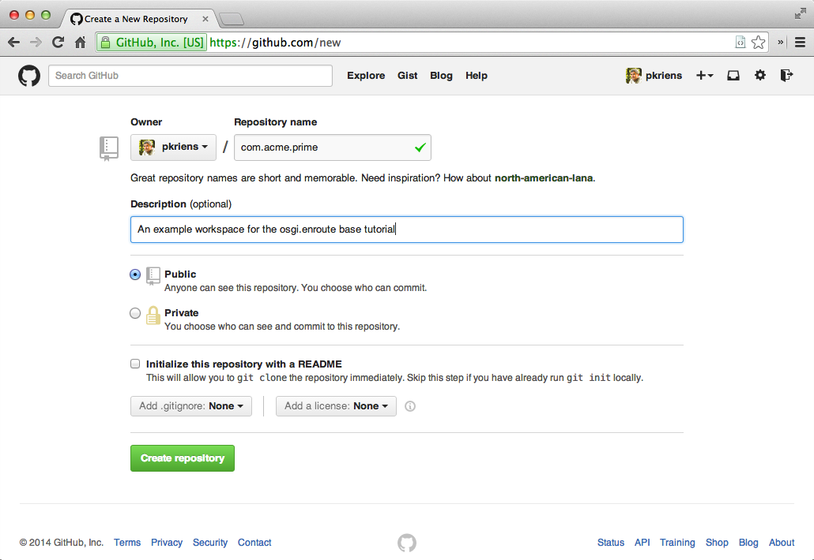
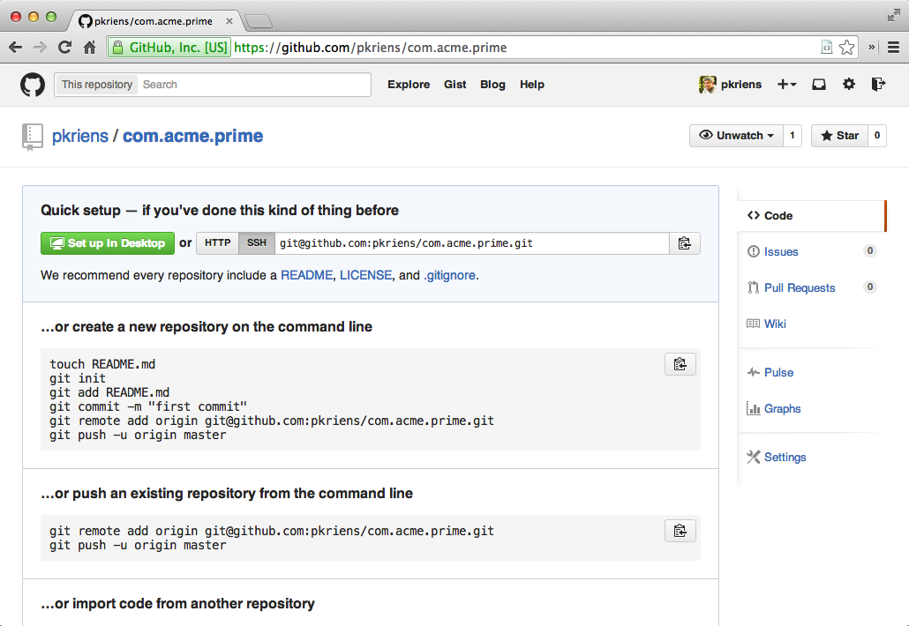
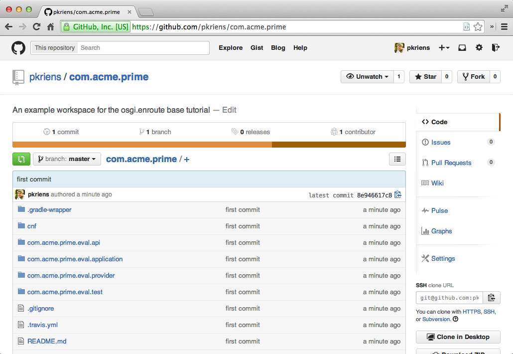
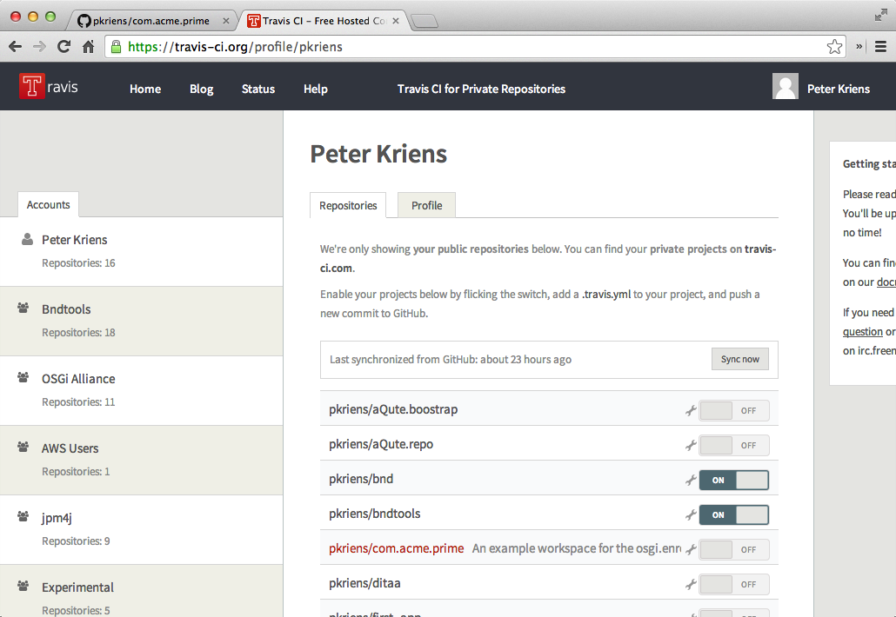
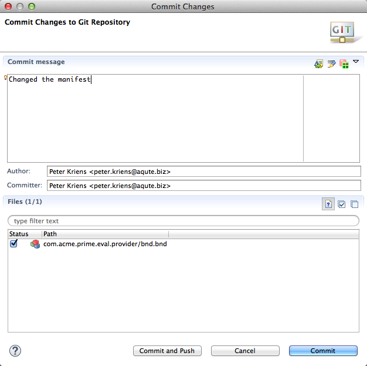
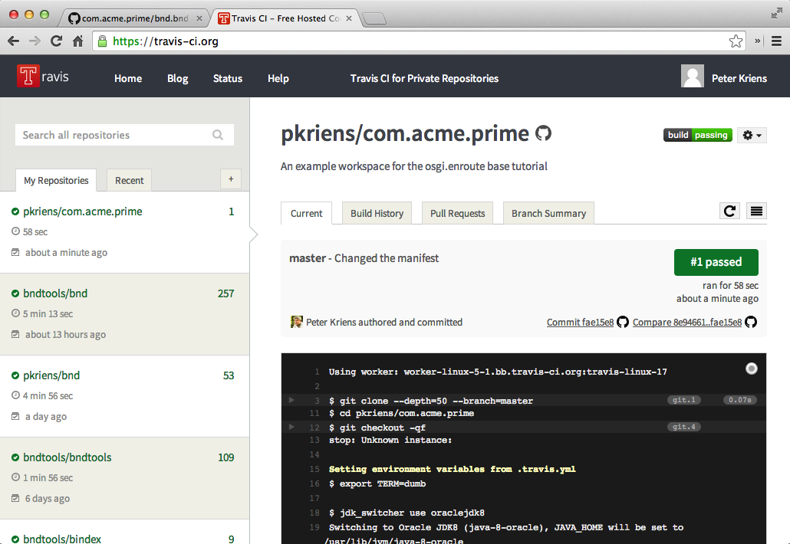

Continuous Integration
What You Will Learn in This Section
In this section we will first see how our current bnd workspace has built in build support through Gradle. Though this can be useful for some local work, the primary purpose is to do continuous integration. So we push the project to Github and set up a Travis Continuous Integration server.
Building Outside the IDE
If you can’t automatically build your product then you’re not a software engineer! One of the giant steps of software engineering was when we came from the cave of releasing code from our personal machines and moved into the world of continuous integration. It is amazing how many unwanted dependencies creep up when you build on a personal system. Automating repeated processes is at the heart of building software. This is why OSGi enRoute (well, bnd) includes a full gradle build that does not require any extra work, you’re basically already setup. The raison d’être of bnd is that it runs inside an IDE like Eclipse but can also run from a shell. Great care has been taken to ensure that bnd builds virtual identical artifacts inside the IDE and from the command line.
So we only have to fire up a shell and run the build!
You do not even need to have gradle installed. There is a script included, gradlew, that will download the correct gradle version. You can also install gradle (>= 1.12) and use it. It should go without saying, but you should also have java 8 installed on the command line.
$ cd /Users/aqute/git/com.acme.prime
$ java -version
java version "1.8.0"
Java(TM) SE Runtime Environment ...
$ ./gradlew
Downloading https://b../biz.aQute.bnd-latest.jar to
/Users/aqute/git/com.acme.prime/cnf/cache/biz.aQute.bnd-latest.jar ...
:help
Welcome to Gradle 1.12.
To run a build, run gradlew <task> ...
To see a list of available tasks, run gradlew tasks
To see a list of command-line options, run gradlew --help
BUILD SUCCESSFUL
For almost all features of bndtools there is a corresponding gradle task you can execute. You can see all the possible tasks with ./gradlew tasks. For example, you automatically get a task to build your com.acme.prime.eval application:
$ ./gradlew export.com.acme.prime.eval
:com.acme.prime.eval.api:compileJava
:com.acme.prime.eval.api:processResources UP-TO-DATE
:com.acme.prime.eval.api:classes
:com.acme.prime.eval.api:jar
Warning: Please update this Bundle-Description in com.acme.prime.eval.api/bnd.bnd
:com.acme.prime.eval.api:assemble
:com.acme.prime.eval.api:export.hello
Plugin found aQute.launcher.plugin.ProjectLauncherImpl 1.4.0.201406101507
BUILD SUCCESSFUL
This task will store the output in com.acme.prime.eval.application/generated/distributions/executable/com.acme.prime.eval.jar.
Putting it on Github
We should now create a repository on Github, for which you will need an account. There is a nice tutorial about setting up new repositories on Github but we take it here one by one.
Lets call this new repository the same as the workspace com.acme.prime. So go to your home page and click on te + on the top and select New Repository.

This will open the window where we can define our repository information. Be nice, also add a description …

We then click on Create Repository which brings us on a page that explains how to connect our local repository in ~/git/com.acme.prime.eval to this repository on Github. In our case, we want to connect a brand new repository, even though our current Git workspace is still connected to the OSGi workspace repository, and it is highly unlikely you can write that repository.

We will follow the first scenario but we want to use the SSH URI, so click on the SSH button and copy the URI in the adjoining text box to the clipboard. It should be something like:
git@github.com:<you>/com.acme.prime.git
This URL will of course differ for you.
Now, in bndtools we must connect our bnd workspace to this repository. It should theoretically be possible to do this inside Eclipse with EGit but this was trickier than expected. So we will take it from the command line. EGit is just not yet up to the level of the original legendary CVS plugin in Eclipse and this turned to be quite cumbersome.
So we will reconnect from the shell. We basically do what Github told us to do on the start page of our repository …
$ cd ~/git/com.acme.prime
$ git add .
$ git commit -m "first commit"
$ git remote add origin git@github.com:<you>/com.acme.prime.git
$ git push -u origin master
Counting objects: 98, done.
Delta compression using up to 8 threads.
Compressing objects: 100% (60/60), done.
Writing objects: 100% (98/98), 66.13 KiB | 0 bytes/s, done.
Total 98 (delta 8), reused 0 (delta 0)
To git@github.com:<you>/com.acme.prime.git
* [new branch] master -> master
Branch master set up to track remote branch master from origin.
$
Sometimes command line interfaces are hard to beat … If you go to Github then you should be able to see your workspace now.

Future changes can now be pushed from the command line (git push) or from inside Eclipse with @/Team
Continuous Integration
The bnd workspace is setup to be built continuously with [Travis CI][3]. The way to activate this is ridiculously simple. Just go to the Travis site, create an account based on your Github credentials, and go to your account page. This is so simple that we will not explain this in detail.
Once you’re logged in, click on your icon and/or name and select accounts. Select the Repositories tab. The first time it is likely that you need to click on the Sync Now button, this refreshes your list of repositories. Find your new repository and set the right button to ON, that’s it. Now every push will automatically build the repository.

Travis will not kick off a build when you switch on the repository. To kick it off we need to make a change and commit that change to Github. Github and Travis are buddies so that this push will result in a build.
Ok, lets add some description in the manifest for our com.acme.prime.eval.provider bundle. Double click the bnd.bnd file in that project, and select the Source tab. (Although there is a Description tab with real widgets we find the Source tab easier to use for these things.)
Bundle-Version: 1.0.0.${tstamp}
Bundle-Description: \
A bundle with a provider. Notice that this provider exports the API package. \
It also provides a JUnit test and it can be run standalone. \
\
${warning;Please update this Bundle-Description in com.acme.prime.eval.provider/bnd.bnd}
The version is ok, the description could use some improvement. We should also remove the warning once we added a proper description:
Bundle-Description: \
They told me to change the manifest so I did.
Save it, select the bnd.bnd file and then @/Team/Commit. This will pop up the following dialog:

Click on Commit and Push, this will commit the changes and push the changes to the repo. Github will call Travis and then Travis will start building.
EGit repeatedly hang but the server was ok. If EGit indicates 100% then your changes are on Github.
It might take a few minutes, but after some time your home screen on Travis should show the build of the com.acme.prime workspace.

How Does it Work?
Continuous integration is not a new development; our first Continuous Integration (CI) server was setup in 1994. However, maintaining a CI server was often a pain in the ass. Jenkins/Hudson improved on the situation but always felt a bit uneasy feeling why we needed a build tool, that is supposed to customize our build environments, and a CI server tool with its own cumbersome plugin model? Debugging those CI server setups was sometimes quite an endurance. Travis showed us how easy it can be to maintain a CI server when you can properly build your workspace. Now, most testing of the build can be done on the laptop with the confidence that the CI will act the same.
So to repeat the steps. We use Github to store the workspace. This is easy to manage from Eclipse with EGit or from the command line. A push to Github will send all changes to Github. Once everything is there, Github posts a URL to Travis and travis will build. If the build fails, you will get a notification.